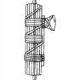

"Faggot" is an interesting concept. To an ancient Frankish barbarian, it meant "bundle of sticks," in English it means a gay man, in German it means bassoon, in Italian it's the symbol of homophobic Fascism, and in Japanese it's just 束.
Imagine the tree is just a bunch of lumber and the loop around it is kind of a rope tied in a knot, holding the lumber together. It is a bundle!!
Onyomi
|
SOKU
|
I always wear SOCKS when I walk on bundles of sticks. I don't want to get SPLINTERS.
|
Mnemonic
|
According to my system, it's tree (木) plus mouth (口) but fuck it- it's easier to just think of it as what it looks like:

|
Kunyomi
Jukugo
|
約束
|
promise
★★★★★
約 (promise/ roughly speaking) + 束 (bundle of sticks)
= 約束 (promise)
|
|
束縛
する
|
restrain
★☆☆☆☆
束 (bundle of sticks) + 縛 (tie up)
= 束縛 (restrain)
to restrain, to restrict, tie up in red tape.
|
Used In
 KANJIDAMAGE
KANJIDAMAGE
 Number
1338
Number
1338